梅の季節に梅吉が舞う [梅吉]
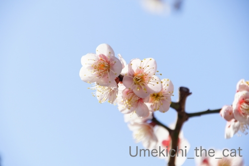
梅が見頃を迎えてますね＾＾
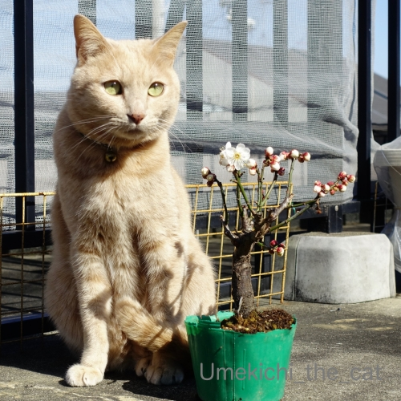
我が家の梅さんと梅の木。
梅の木はまだちゃんとした鉢に植え替えていないのが
なんともお恥ずかしい (｡-_-｡)
最近手に入れたこの梅の木、「日月（じつげつ）」という品種で
一つの枝に紅・白の花が咲くと言う。
今の所咲いているのは白のみ。
つぼみを見ても赤っぽいのは見当たらない・・・・・
ネットで色々見てみると「色の比率は運次第」みたいですw
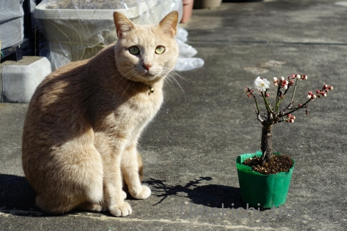
赤いお花も咲くと良いね、梅吉さん＾＾
この日は風もなくぽかぽか陽気でした。
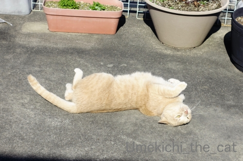
お日様を浴びて梅吉数ヶ月ぶりの喜びの舞！
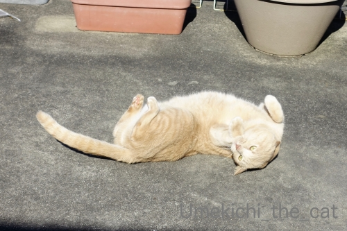
お外でくりんくるんは最高だねー！
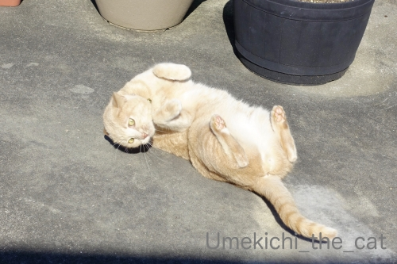
国芳猫顔もご披露ですw
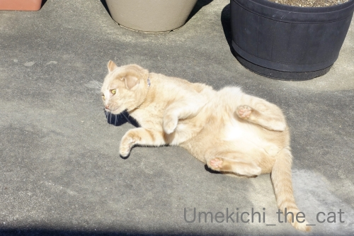
寒い間はどんなに誘ってもベランダに出ようとしなかったのに。
ニャンコも春を感じている様ですよ＾＾
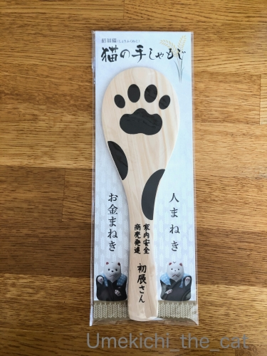
もう数年来通っているのに今まで気づかなかった
住吉大社の「猫の手しゃもじ」
これ一つで「人まねき・お金まねき」の両ご利益があるようです。
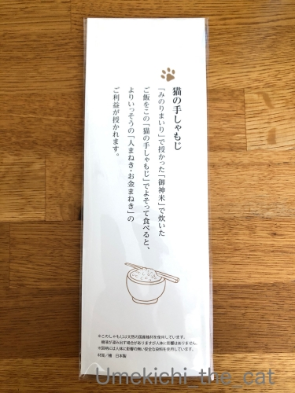
これでご飯をよそうとさらに運気アップ！？
日本製なので使っても全然問題無さそうですが
ご飯が激しくくっつきそうなのでためらってます(⌒-⌒;
＊＊＊＊＊＊＊＊＊＊＊＊＊＊＊＊＊＊＊＊＊＊＊＊＊＊＊＊＊＊＊＊＊
先日、年に一度の健康診断でした。
大嫌いな胃のバリウム検査は昨年10月に胃カメラ検査をしているのでパス。
あと「痛い」検査はマンモグラフィー検査くらい。
（女性は皆さんあの痛さをご存知かと。
男性はどんだけ痛いかパートナーに聞いてみてくださいねー( ´艸｀)
でもマンモグラフィーは短時間だし検査後の不快感はなしなので
今年の検診は楽勝だと思っていたのにーーーーー！！！！！
採血でとんだ目にあいました。
採血してくれたのは同年代と思われるおばちゃん。
さしてから「あら、血管に刺さらないわ！」と針でグリグリと血管を探る( ；∀；)
こういう時私は正直に痛いと言えない方なんですが
流石に「痛いです！」と訴えましたよ。。。
じゃあ一度針を抜きますねってことになったのですが
針を抜く途中で血管に行き当たったらしく「あら、血が採れそうよ」と
再度ぐいっと針を押されて採血続行(ｰ ｰ;)
針を刺されるのは割と平気な方だし（痛いけどね）
採血管に血がびょーっと出てくるのを「血液サラサラかしら？」と
じっと見ているくらい採血は平気な人なのに。
針を刺されたところ、内出血はしてないですけど
３日経っても触るとまだ痛い(꒦ິ⌑꒦ີ)
この一件で採血嫌いになっちゃいそうです。
体重、身長、お腹周り（笑）は昨年とほぼ変わらずで褒められましたよ(´▽｀)
身長が縮んでなくて良かったw
 ↑ガブッと一押し↑
↑ガブッと一押し↑
梅が見頃を迎えてますね＾＾
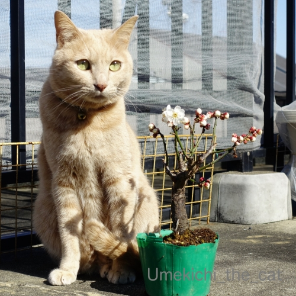
我が家の梅さんと梅の木。
梅の木はまだちゃんとした鉢に植え替えていないのが
なんともお恥ずかしい (｡-_-｡)
最近手に入れたこの梅の木、「日月（じつげつ）」という品種で
一つの枝に紅・白の花が咲くと言う。
今の所咲いているのは白のみ。
つぼみを見ても赤っぽいのは見当たらない・・・・・
ネットで色々見てみると「色の比率は運次第」みたいですw
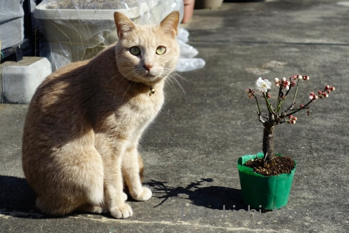
赤いお花も咲くと良いね、梅吉さん＾＾
この日は風もなくぽかぽか陽気でした。
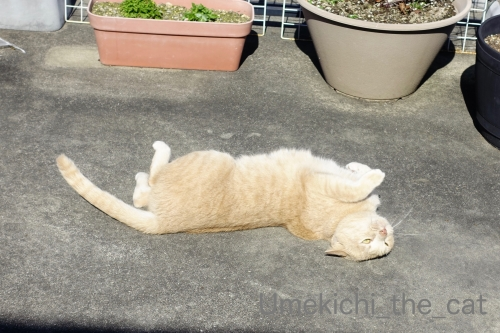
お日様を浴びて梅吉数ヶ月ぶりの喜びの舞！
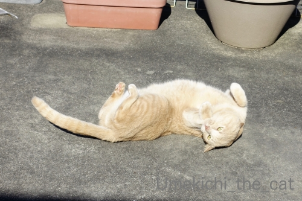
お外でくりんくるんは最高だねー！
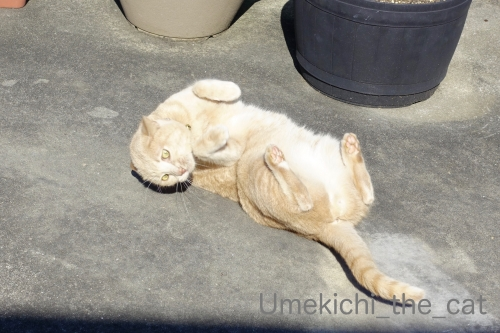
国芳猫顔もご披露ですw
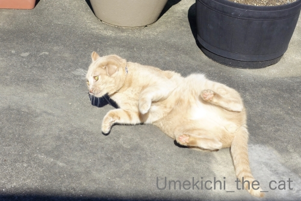
寒い間はどんなに誘ってもベランダに出ようとしなかったのに。
ニャンコも春を感じている様ですよ＾＾
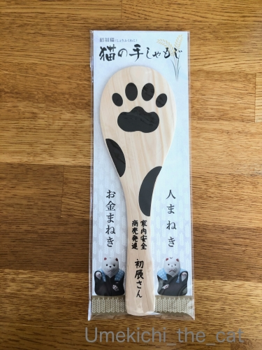
もう数年来通っているのに今まで気づかなかった
住吉大社の「猫の手しゃもじ」
これ一つで「人まねき・お金まねき」の両ご利益があるようです。
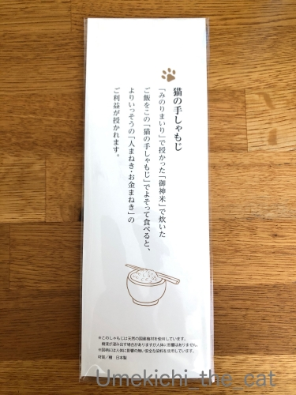
これでご飯をよそうとさらに運気アップ！？
日本製なので使っても全然問題無さそうですが
ご飯が激しくくっつきそうなのでためらってます(⌒-⌒;
＊＊＊＊＊＊＊＊＊＊＊＊＊＊＊＊＊＊＊＊＊＊＊＊＊＊＊＊＊＊＊＊＊
先日、年に一度の健康診断でした。
大嫌いな胃のバリウム検査は昨年10月に胃カメラ検査をしているのでパス。
あと「痛い」検査はマンモグラフィー検査くらい。
（女性は皆さんあの痛さをご存知かと。
男性はどんだけ痛いかパートナーに聞いてみてくださいねー( ´艸｀)
でもマンモグラフィーは短時間だし検査後の不快感はなしなので
今年の検診は楽勝だと思っていたのにーーーーー！！！！！
採血でとんだ目にあいました。
採血してくれたのは同年代と思われるおばちゃん。
さしてから「あら、血管に刺さらないわ！」と針でグリグリと血管を探る( ；∀；)
こういう時私は正直に痛いと言えない方なんですが
流石に「痛いです！」と訴えましたよ。。。
じゃあ一度針を抜きますねってことになったのですが
針を抜く途中で血管に行き当たったらしく「あら、血が採れそうよ」と
再度ぐいっと針を押されて採血続行(ｰ ｰ;)
針を刺されるのは割と平気な方だし（痛いけどね）
採血管に血がびょーっと出てくるのを「血液サラサラかしら？」と
じっと見ているくらい採血は平気な人なのに。
針を刺されたところ、内出血はしてないですけど
３日経っても触るとまだ痛い(꒦ິ⌑꒦ີ)
この一件で採血嫌いになっちゃいそうです。
体重、身長、お腹周り（笑）は昨年とほぼ変わらずで褒められましたよ(´▽｀)
身長が縮んでなくて良かったw

カフェオレ色の梅吉

梅吉 2023年8月10日 永眠


梅吉と出会った譲渡会

犬猫の理由なき殺処分ゼロ
妄想広告
UMEKICHI 光

爆発的に早い！
時々攻撃的！
Thanks to Mr.Boss365
爆発的に早い！
時々攻撃的！
Thanks to Mr.Boss365

梅吉さんにはやっぱり梅が似合いますね。喜びの舞いにも春を感じます。
木のおしゃもじは水にしばらく浸けてから使えばご飯はあまりくっつかないのでは。
採血は担当者の当たり外れが大きいですね。私は血管が見つからないと言われいつも何度も刺されるのです。
by zombiekong (2020-02-13 00:23)
このしゃもじ、欲しいなぁ。
毎日使って金運を上げたい（爆）
↑私も濡らせば大丈夫だと思う＾＾
by ぽちの輔 (2020-02-13 06:09)
梅吉さん、ぬくぬくの陽だまりで喜びの舞=(^.^)=
とっても気持ちよさそうですねぇ( ^ω^ )
「人招き、お金招き」の猫の手しゃもじ＾＾
招かなくても肉球柄で可愛いから欲しいw
採血、なんて無慈悲な人に当たったんでしょう(ｰ ｰ;)
ぐりぐりと探るのだけはやめて欲しいですよねぇ(´･_･`)
by ニッキー (2020-02-13 07:05)
梅とのツーショット、いいですね〜。
陽だまりのあったかさも伝わってきますよ！
おしゃもじ、色んなグッズを作るもんやなと
ちょっと感心です(^-^)
神さんも商売上手ー！
by よーちゃん (2020-02-13 07:09)
梅吉さんゴロゴロ気持ちいいにゃあ^^
by ニコニコファイト (2020-02-13 07:10)
梅吉さん、ころんころん♪ 気持ちよさそうですねぇ。
実家のミイちゃんも、おんもにでると、コンクリートのところで、これ、やります。芝生ではしないから、やっぱりコンクリートの方がころんころんに向いてるのかな。
おしゃもじ、使う前に水で湿らせばある程度は平気かと。
健康診断の採決！たまに聞くんですよねぇ、採決のヘタクソな人の話。最悪ですねぇ。3日くらい内出血が消えなかったとか言ってた人もいました。あ、マンモもね、ちょっとした加減で痛さが全然違うんだって。前に担当した人がそう言ってて、「痛かったら言ってくださいね」って。
そして、私は、今年度は健康診断受けないことになりそう。マンモと便潜血検査は、市の方でやったけど、普通の健康診断は、会社の方が加盟している保険組合の方で3月までに受けるらしいんだけど、自分で申し込んで行け、ということらしく、初めての私にも説明も何もなく、よくわからないままここまで来て、今さら、行く時間ないし、フォローもされないから、もういいや、って感じ。
by ChatBleu (2020-02-13 07:57)
梅吉さんと梅♪ 絵になりますね(#^.^#)
久しぶりの日向ぼっこでゴロンゴロン♪
とても気持ち良さそうです！
私も血管が見つかりにくいらしく
左、右と刺されたことがあります(;^_^A
ベテランさんに変わりますと
言われたことも（笑
グリグリされるのは嫌ですね・・・
by きぃ (2020-02-13 08:09)
梅の季節ですね～。梅吉さんの名前の由来が気になります。
こちらはまだ雪景色ですが、梅の季節が待ち遠しいです。
再来月は内視鏡検査ですが、今から憂鬱です・・・。
by kou (2020-02-13 08:50)
梅吉さんと梅の木の記念写真、バッチリですね。
１本の木に紅白花が咲く木は前に住んでいた近所や梅苑で見たことがありますが、不思議です。
梅吉さんの春の喜びの舞、気持ち良さそうで、
誘われて伸び〜をしました（笑）
健康診断、無事に終わりそうですね。
採血の下手な人に当たると最悪です。
健康診断やマンモグラフィーは受けないようにしてます。
何年かに一度は血液検査をしてましたが、
それも、異常なしなので（笑）ここ数年受けていません。
たとえ老人は病気にかかっても若い人と違って進行が遅いので、寿命だと思ってます。
つい先日、夫が舌の痛みで受診すると、
病名は分からないのでと、
沢山の薬を貰ってきました。
夫、渡された薬を１度も飲まずに、
口内炎の薬だけつけていました（笑）
自分でどの程度かわかると！
表面上は数日で治りました。
血液検査までして、数時間かかって（笑）
痛いと大騒ぎして（夫は痛みに弱いらしいw）
それだけかい！とツッコミを入れたくなりました。
芯が健康で良かったと思ってます。
by kiki (2020-02-13 08:59)
梅吉さん、気持ちよさそうにコロコロしてから。
しかし、そのしゃもじ欲しいなあ(*^。^*)
by じゅらまろ (2020-02-13 09:40)
紅白の花が咲く梅の木いいですねｗ♪
紅白の割合は運次第(^^ これも楽しみのうちということで。
広々としたベランダで二幸を浴びながらのゴロンゴロンは格別でしょう。
うちはこの間ぶっ壊れたポールハンガーがまだベランダにいるので、さっさと解体して燃えないゴミに出さねば・・・
採血、下手な人にあたるとたまったもんじゃないですよね！
私も過去に何度も失敗されています。痣になったり、内出血したりorz
上手な人は難なく刺さるのにね。この差はデカすぎ君です。
マンモグラフィーよくぞここまで潰しますね！ってくらい潰されますよね。
木のしゃもじ・・・確かにくっつきそうですねｗ
我が家ももう何年も丸いボツボツのしゃもじを使用しています。
by marimo (2020-02-13 10:39)
梅さんと梅の木～
どっちも可愛らしいニャ～
猫の手しゃもじもいいニャ。
by 英ちゃん (2020-02-13 12:14)
梅吉さんの季節到来ですね(#^^#)
梅の花とのツーショット、そのまま2月のカレンダーになりそう♪
紅梅がいくつ咲くか、観察日記をぜひ公開してくださいね！
ひろ～いテラスでゴロンゴロン、気持ちよさそうです。
健康診断の採血、ほんとに下手くそな人に当たって何度もやり直しになり、そうでなくても注射苦手なのに気分が悪くなって倒れかけた経験あります^^;
しばらく内出血でひどい色になりましたし、上手な人だチクッとするだけでスグ終わるのに、ものすごく損した気分でした。
年齢と共に常に持病もチラホラ、今もめまいでクラクラしてますが、うまく付き合っていくしかありません。
by ゆきち (2020-02-13 12:22)
こんにちは。
協力的な梅さん？カメラ目線で流石です。
「日月（じつげつ）」面白い品種で、おめでたいですね。お店で探してみます。
喜びの舞！！広いバルコニー羨ましい！！梅吉君も気持ちよさそうです。
「猫の手しゃもじ」の日本製は重要ですね（笑）少々高くても安心安全と感じます。
健康診断、マンモグラフィー検査？痛み？聞いてみます。
採血「当たり外れあり」でお大事にです。
小生も経験あり、見ているだけで気分悪くなるので顔を逸らします。
点滴で似た酷い経験あり、２度と長時間の点滴は避けたいです。
「身長が縮んで・・・」一安心ですが、出来れば伸ばしましょう！！
先ずは、ストレッチで姿勢を良くですね？梅吉君と猫のポーズです！？(=^･ｪ･^=)
by Boss365 (2020-02-13 13:05)
お花と並んで可愛いっ♪
おしゃもじも～。
by yuppie (2020-02-13 13:49)
私も今月末に検診予約してます。
胃カメラもマンモグラフィーもやっぱり嫌だなぁー。
by yuppie (2020-02-13 13:52)
わー！！！いいな！！おしゃもじ(^^)
今度行ったら絶対買う！
マンモーの痛みはもう…私は肉っていうか皮なので
地獄の苦しみとはこのことか、って感じです^^;
採血、ただでさえ「無」にならないと失神しそうなので
グリグリなんて考えるだけでチキン肌…。
by も〜 (2020-02-13 15:40)
梅吉さん、梅の木と並んで撮影ですね！
表でゴロゴロは気持ち良さそうですね。
by ma2ma2 (2020-02-13 16:56)
ちぃさん家のベランダは梅盛りですね(≧∀≦)
黄梅こと梅ちゃんが一番美しいですわっ❤
お外で喜びの舞、かわいくてたまりませんね♪
そのしゃもじほしいですーー！！
でも実際に使うのは私も遠慮しちゃいますね＾＾
ご飯粒がつくのイヤですからー。
マンモ、受けた時のあの痛みがひどくて
逆に病気になりそうでした(ストレスで)
もっと痛みのない検査法をお願いしたいものです...
by カトリーヌ (2020-02-13 17:28)
わたし、マンモグラフィー平気なんですよねぇ。周りの人から
散々脅されて怯えながら挑んだ検査が大して痛くなくてビックリ。
けっして巨乳ではありません、むしろ「挟めるかしら」って心配
になるほどの貧乳。胃カメラは「鼻から入れるとそんなに辛くない」
を安易に信じて受けたら地獄の苦しみだったので二度とやりません。
by mio (2020-02-13 21:26)
小さな梅の木ですね！
でもちゃんと花咲かせるところがとても健気。T_T)
梅吉さんの喜びの舞、気持ち良さそう♪
採血、それは大変でしたね。
私は採血のときは、採血をする人の表情を（上手いかどうか？）どうしても確認してしまいます。^^;
by yes_hama (2020-02-13 22:13)
ダブル梅さんいいですね～♪
日差しもあたってもうすぐ春って感じです。
これからベランダ梅吉さんがたくさん見れるのかな☆
猫の手しゃもじはそのままスプーンにして食べちゃいましょう(笑)
採血・・・ご愁傷様でございます(>_<)
by yamatonosuke (2020-02-14 01:34)
梅吉さんと梅、決め顔が、きりりとよい写真ですね！
にゃんこしゃもじかわいい♡
by liang (2020-02-14 10:09)
梅吉ちゃんナイスポーズですね～
あったかくて気持ちよさそう。
猫の手しゃもじ
ナイスアイディアですねー
運をすくいまくりそうですね(#^^#)
健康診断の採血
ぱだおには悪夢のような出来事がありました。
ぱだおの血管はかなり浮き出ているので
採血はかなり簡単なんですが
新人の看護婦だかよくわかりませんが
なってこったい注射の針が血管を
突き抜けてしまい
挙句の果てに奥の骨に突き刺さったのです。
うぉぉぉぉぉー
さすがに声を荒げてしまいました・・・・
結局内出血が1か月程度とれず
骨の痛みもそれぐらい続きました。
それ以来、こわくて血管を突き抜けないようにと
都度申し上げています・・・
あー地獄の採血だった・・・(+o+)
by お名前（必須） (2020-02-14 10:46)
あーごめんなさい
ログインしないでコメントうったら
GUESTになってしまいました。
ソーリー
by ぱだおくん (2020-02-14 10:52)
縁起の良いしゃもじ！
たしかにごはんつぶ、たくさんついちゃいそうですねｗｗ
採血、それは大変でしたね^^;
わたしもサラサラ血かしらーってガン見するタイプなので
同じだから笑ったｗ
はやく痛みがとれるといいね。
マンモ、生理前は超絶痛かったな。胸はっちゃってるから
おされて「中身でるー！」って思ったよ^^; 中身ってなに・・・
by リュカ (2020-02-14 15:18)
こんにちは。再訪ですが・・・
「梅吉さん宇宙編の動画」はちぃさんでしたか？失礼しました。
やれば出来る子？だったのですね。流石です。
すももも動画デビューしたいなーと感じる今日この頃です！？(=^･ｪ･^=)
by Boss365 (2020-02-14 17:00)
きれいな梅～！
梅吉さん、明るい日差しが似合いますね^^
喜びの舞、素敵です。
猫の手しゃもじ、いいわあ～^^
採血は下手な人にあたると最悪ですよね～。
針でグリグリ…って！
いぜん、「あれ？」とか言ってずぼっと抜いてまたずぼっと刺すみたいな動きが雑な人にあたって、貧血になりそうになったことがあります^^;
by sana (2020-02-14 20:53)
紅白の花が咲く梅、紅い花も咲くといいですね
そういえば大阪城公園の梅園で紅白で咲いている木を見た事がありますよ
採血、看護師さんによって当たり外れがありますよね
「あなたよく採血失敗されるでしょう」と
ビシビシ叩いて血管を出されたこともありますが
「そんな事言われたの初めてです」と言ったら
その看護師さんは急に無言になりましたよ（苦笑）
by 藤並 香衣 (2020-02-15 00:10)
おぉ、ちいさな梅の木♪ なかなか形が良いわ〜♪
もちろん梅吉さんも、よいお顔、そしてよいお姿♡
ぬくぬくと舞っていらっしゃる姿も、よっ、千両役者(^^)v
by のらん (2020-02-15 10:38)
おお、梅、白・赤一緒のタイミングで咲くといいですね。
かわいい木だな。
採血、皮膚科で一度血の噴水浴びた経験あります^^;
あと救急で入った時は10回くらい差しなおしで
やっと採れたことも^^;
私も注射とか針は別に大丈夫だけど
やになっちゃいました。
by ふにゃいの (2020-02-15 18:10)
梅吉喜びの舞。春も近いかな？(*^-^*)
注射は嫌いです・・・。
点滴なんて、腕に力が入っちゃって針を折ってしまうんじゃないか！！
飛び出してくるんじゃないか！なんて思いながら受けています。
針グリグリなんてされたら絶対に睨んでやるーーっｗ
出来るかな・・・(#^^#)
by emi (2020-02-16 14:01)
採血の件、大変でしたね。
同じ採血でも人によって違いが大きい
ですよね。
上手い人はやはり「神！」って思い
ますが、下手な人に出会うと
「２度と来ん！」と思います(-_-;)
by あとりえＳＡＫＡＮＡ (2020-02-16 21:46)